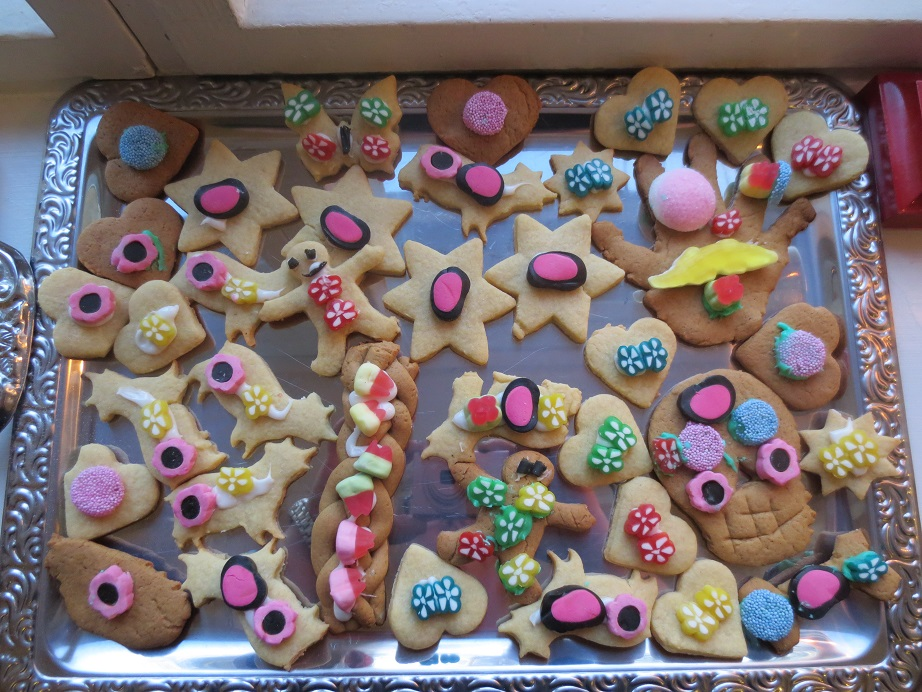

Makeita Makupaloja

Sitruunapannarit
2 kananmunaa, 1 rkl intiaanisokeria, 1 tlk sitruunarahkaa (tai maitorahkaa + 1 rkl hunajaa, 1 tl vaniljasokeria ja sitruunamehua), 1 ½ dl maitoa, 2 rkl juoksevaa margariinia, 3 dl vehnäjauhoja, ½ dl pikakaurahiutaleita, 1 ½ dl leivinjauhetta, pari hyppysellistä suolaa
Vatkaa kananmunat rikki, vatkaa sekaan sokeri, rahka ja maito. Lisää kuivat aineet ja sekoita. Anna tekeytyä 10 min. ja sekoita uudestaan. Paista (lettu)pannulla miedolla lämmöllä.
2 kananmunaa, 1 rkl intiaanisokeria, 1 tlk sitruunarahkaa (tai maitorahkaa + 1 rkl hunajaa, 1 tl vaniljasokeria ja sitruunamehua), 1 ½ dl maitoa, 2 rkl juoksevaa margariinia, 3 dl vehnäjauhoja, ½ dl pikakaurahiutaleita, 1 ½ dl leivinjauhetta, pari hyppysellistä suolaa
Vatkaa kananmunat rikki, vatkaa sekaan sokeri, rahka ja maito. Lisää kuivat aineet ja sekoita. Anna tekeytyä 10 min. ja sekoita uudestaan. Paista (lettu)pannulla miedolla lämmöllä.

Toini-mummon Runebergin kakku
(Reseptiä mukaellen tehty pienempiä Runebergin torttuja)
Pohja: 100g margariinia tai voita, 1 ½ dl sokeria, 2 kananmunaa, 1 dl mantelirouhetta, 1 dl korppujauhoja, 1 ½ dl vehnäjauhoja, 1 dl kermaviiliä, 1 tl leivinjauhetta, vadelmahilloa (tai mustaherukkahilloa)
Kostutus: ½ - 1dl rommia (tai kostutus punssilla: 1 tl - 2 tl / torttu)
Koristelu: tomusokeria + vettä tai mehua
Paista 175 C n. 40-50min. (Irtopohjavuoka, n. ½ tuntia)
(Reseptiä mukaellen tehty pienempiä Runebergin torttuja)
Pohja: 100g margariinia tai voita, 1 ½ dl sokeria, 2 kananmunaa, 1 dl mantelirouhetta, 1 dl korppujauhoja, 1 ½ dl vehnäjauhoja, 1 dl kermaviiliä, 1 tl leivinjauhetta, vadelmahilloa (tai mustaherukkahilloa)
Kostutus: ½ - 1dl rommia (tai kostutus punssilla: 1 tl - 2 tl / torttu)
Koristelu: tomusokeria + vettä tai mehua
Paista 175 C n. 40-50min. (Irtopohjavuoka, n. ½ tuntia)

Pääsiäispuustit
Pullataikina: 5 dl maitoa, 1 kananmuna, 2 dl sokeria, 1 rkl kardemummaa, 1 ½ tl suolaa, 25g tuorehiivaa, 15 dl vehnäjauhoja, 150g margariinia, rusinoita
Täyte: margariinia, sokeria, Luonto + sitrusrahkaa, mantelirouhetta
Pinta: tomusokeria, sitruunan mehua
Liota hiiva kädenlämpöiseen maitoon, vispaa joukkoon kananmuna, sokeri, suola, sulatettu rasva ja osa jauhoista. Lisää rusinat ja loput jauhot, pyöräytä yleiskoneessa. Kohota taikinaa reilu tunti. Leivo kierrepuusteiksi ja kohota lämmitetyillä pelleillä. Paista 225 C n. 14min.
Pullataikina: 5 dl maitoa, 1 kananmuna, 2 dl sokeria, 1 rkl kardemummaa, 1 ½ tl suolaa, 25g tuorehiivaa, 15 dl vehnäjauhoja, 150g margariinia, rusinoita
Täyte: margariinia, sokeria, Luonto + sitrusrahkaa, mantelirouhetta
Pinta: tomusokeria, sitruunan mehua
Liota hiiva kädenlämpöiseen maitoon, vispaa joukkoon kananmuna, sokeri, suola, sulatettu rasva ja osa jauhoista. Lisää rusinat ja loput jauhot, pyöräytä yleiskoneessa. Kohota taikinaa reilu tunti. Leivo kierrepuusteiksi ja kohota lämmitetyillä pelleillä. Paista 225 C n. 14min.

Aune-mummon vaaleat joulupiparit
500g voita, 500g sokeria, 3 kananmunaa, 1kg vehnäjauhoja, 1tl soodaa
Vatkaa voi ja sokeri vaahdoksi. Lisää kananmunat yksitellen edelleen vatkaten. Sekoita vehnäjauhot ja sooda taikinaan. Jäähdytä taikina ja kauli siitä levy, josta voi muotilla irrottaa piparkakkuja. Paista 175 C vaalean ruskeiksi.
Vinkki: Pipareita voi koristella sokerikuorrutteella ja karkeilla.
500g voita, 500g sokeria, 3 kananmunaa, 1kg vehnäjauhoja, 1tl soodaa
Vatkaa voi ja sokeri vaahdoksi. Lisää kananmunat yksitellen edelleen vatkaten. Sekoita vehnäjauhot ja sooda taikinaan. Jäähdytä taikina ja kauli siitä levy, josta voi muotilla irrottaa piparkakkuja. Paista 175 C vaalean ruskeiksi.
Vinkki: Pipareita voi koristella sokerikuorrutteella ja karkeilla.